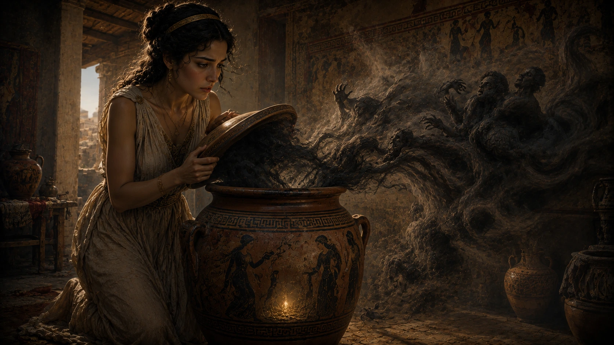

Bazı mitler vardır; ilk duyulduğunda basit bir ders hikâyesi gibi görünür, fakat içine girildiğinde bir uygarlığın insan doğası, acı, merak, ceza ve umut hakkındaki düşüncelerini açığa çıkarır. Pandora'nın kutusu da Yunan mitolojisinin bu tür anlatılarından biridir. Bugün "Pandora'nın kutusunu açmak" sözü, kontrol edilemeyecek sonuçlar doğuran bir şeyi başlatmak anlamında kullanılır. Ancak bu deyimin arkasındaki mit, çoğu kişinin bildiğinden çok daha karmaşıktır.
Yaygın anlatıya göre Pandora, yasaklanan bir kutuyu açar ve içinden hastalıklar, acılar, kötülükler ve felaketler dünyaya yayılır. Kutunun içinde kalan tek şey ise umuttur. Bu haliyle hikâye, merakın bedeli üzerine kurulmuş gibi görünür. Fakat antik kaynaklara yakından bakıldığında mesele yalnızca merak değildir. Pandora'nın hikâyesi, Zeus'un Prometheus'a duyduğu öfkeyle, insanlara verilen ilahi bir cezayla ve Yunan dünyasının insan hayatındaki acıyı nasıl açıklamaya çalıştığıyla bağlantılıdır.
Üstelik burada çok önemli bir ayrıntı vardır: Antik metinlerde Pandora'nın açtığı şey aslında bugün anladığımız anlamda bir "kutu" değildir. Hesiodos'un anlattığı hikâyede kullanılan nesne büyük olasılıkla bir pithos, yani büyük bir saklama kavanozudur. "Pandora'nın kutusu" ifadesi daha sonraki çeviri ve yorum süreçleriyle yaygınlaşmıştır. Buna rağmen deyim o kadar güçlü hâle gelmiştir ki bugün neredeyse bütün dünyada bu adla bilinir.
Pandora'nın hikâyesini ilginç yapan şey yalnızca bu çeviri meselesi değildir. Asıl soru şudur: Yunan mitolojisine göre insanlar neden acı çekmeye başladı? Hastalıklar, yaşlılık, emek, keder ve ölüm insan hayatına nasıl girdi? Pandora anlatısı tam da bu sorulara mitolojik bir cevap verir. Bu yüzden onu yalnızca "meraklı bir kadının kutuyu açması" şeklinde anlatmak, hikâyenin en önemli kısmını kaçırmak olur.
Bu makalede Pandora'nın kim olduğunu, kutunun aslında neyi temsil ettiğini, Zeus'un bu hikâyedeki rolünü, Prometheus bağlantısını ve kutuda kalan "umut" meselesinin neden hâlâ tartışıldığını adım adım ele alacağız. Çünkü Pandora'nın kutusu, yalnızca açılmaması gereken bir nesnenin hikâyesi değildir. O, insanlığın acıyla ve umutla aynı anda yaşamaya mahkûm oluşunu anlatan en etkili mitlerden biridir.
Pandora Kimdir?
Pandora, Yunan mitolojisinde "ilk kadın" olarak anlatılan figürlerden biridir. Onun hikâyesi özellikle Hesiodos'un Theogonia ve İşler ve Günler adlı eserlerinde karşımıza çıkar. Ancak Pandora'yı anlamak için onu tek başına değil, Prometheus ve Zeus arasındaki büyük gerilimin içinde değerlendirmek gerekir. Çünkü Pandora'nın ortaya çıkışı, yalnızca bir yaratılış hikâyesi değil, aynı zamanda tanrılarla insanlar arasındaki dengenin bozulmasına verilen ilahi bir cevaptır.
Hesiodos'un anlatısına göre Prometheus, insanlara yardım eden kurnaz bir Titan'dır. Tanrılarla insanlar arasındaki paylaşımda Zeus'u kandırır ve ardından ateşi insanlara ulaştırır. Ateş, antik dünya için yalnızca ısınma aracı değildir. Yemek pişirmek, metal işlemek, zanaat geliştirmek ve medeniyet kurmak için gerekli temel güçlerden biridir. Bu nedenle ateşin insanlara verilmesi, onların sıradan canlılar olmaktan çıkıp kültür üretebilen varlıklara dönüşmesi anlamına gelir.
Zeus bu duruma öfkelenir. Çünkü Prometheus'un yaptığı şey yalnızca bir hırsızlık değildir; ilahi düzenin sınırlarını zorlayan bir müdahaledir. İnsanlar tanrılara ait bir güce kavuşmuştur. Bunun üzerine Zeus, insanlara doğrudan saldırmak yerine çok daha karmaşık bir ceza hazırlar: Pandora.
Pandora'nın yaratılışı bu nedenle sıradan bir doğum değildir. Tanrıların ortak emeğiyle şekillendirilmiş özel bir varlıktır. Hephaistos onu topraktan biçimlendirir, Athena ona el sanatlarını ve dokumayı öğretir, Aphrodite güzellik ve çekicilik verir, Hermes ise kurnazlık ve ikna gücü kazandırır. Bu armağanların her biri Pandora'nın adını da açıklar. "Pandora" genellikle "bütün armağanlara sahip olan" ya da "bütün tanrıların armağanı" şeklinde yorumlanır.
Fakat burada büyük bir ironi vardır. Pandora dışarıdan bakıldığında tanrıların insanlara sunduğu olağanüstü bir armağan gibi görünür. Oysa Hesiodos'un anlatısında bu armağan, aynı zamanda insanlığın hayatına sıkıntıların girmesine yol açacak bir cezanın parçasıdır. Pandora'nın güzelliği, becerileri ve çekiciliği onun yalnızca masum bir hediye olmadığını; Zeus'un çok daha ince hesaplanmış planının merkezi olduğunu gösterir.
Bu yüzden Pandora'yı yalnızca "kutuyu açan kadın" olarak tanımlamak eksik olur. O, Yunan mitolojisinde insanlığın kaderini değiştiren büyük anlatının kilit figürlerinden biridir. Onun hikâyesi, meraktan çok daha önce başlar; tanrılara meydan okuyan Prometheus'un ateşi insanlara vermesiyle başlar.
Prometheus, Ateş ve Zeus'un Cezası
Pandora'nın hikâyesi çoğu zaman kutunun açıldığı sahneyle başlatılır. Oysa bu anlatının gerçek başlangıcı Pandora'dan önceye, Prometheus'un insanlara ateşi vermesine uzanır. Çünkü Pandora, Yunan mitolojisinde kendi başına ortaya çıkan bağımsız bir figür değil; Zeus'un Prometheus'a ve insanlara verdiği cevabın parçasıdır.
Prometheus, Titan soyundan gelen kurnaz ve zeki bir figürdür. Onu diğer birçok Titan'dan ayıran şey, insanlarla kurduğu özel ilişkidir. Antik anlatılarda Prometheus çoğu zaman insanların yararına hareket eden, tanrılarla insanlar arasındaki sınırı zorlayan bir karakter olarak görünür. Onun en ünlü eylemi ise ateşi tanrılardan alıp insanlara ulaştırmasıdır.
Ateş, antik dünyada yalnızca sıcaklık sağlayan bir unsur değildi. İnsan hayatını dönüştüren temel güçlerden biriydi. Ateş sayesinde yemek pişirilebilir, madenler işlenebilir, zanaatlar gelişebilir ve insanlar doğa karşısında daha güçlü hâle gelebilirdi. Bu nedenle Prometheus'un ateşi insanlara vermesi, basit bir yardım değil, insanlığın kaderini değiştiren büyük bir müdahaleydi.
Zeus'un öfkesi de tam olarak buradan doğar. Çünkü Prometheus yalnızca bir nesneyi çalmamıştır; tanrılara ait bir gücü insanlara taşımıştır. Bu, ilahi düzen açısından büyük bir sınır ihlalidir. Zeus'un gözünde insanlar, kendilerine ayrılan yerin ötesine geçmeye başlamıştır. Ateşle birlikte yalnızca daha konforlu yaşamayacak, aynı zamanda üretmeye, inşa etmeye ve tanrılara daha az bağımlı olmaya başlayacaklardır.
Bu yüzden Zeus'un cevabı da sıradan bir ceza olmaz. Prometheus zincire vurulur ve karaciğeri her gün bir kartal tarafından yenir. Ancak insanlara verilecek ceza daha farklıdır. Zeus, onların hayatına doğrudan yıkım göndermek yerine, dışarıdan bakıldığında armağan gibi görünen ama içinde büyük sonuçlar taşıyan bir varlık yaratılmasını ister.
Bu varlık Pandora'dır.
Pandora'nın yaratılması, Yunan mitolojisinin en çarpıcı anlatı mantıklarından birini gösterir. Zeus insanlara felaketi açık bir düşman gibi göndermez. Onlara güzellik, çekicilik, beceri ve merakla donatılmış bir figür gönderir. Böylece ceza, kaba kuvvet şeklinde değil, insan hayatının içine sızan karmaşık bir dönüşüm olarak gelir.
Burada Pandora'nın kendisini basitçe suçlu ilan etmek doğru değildir. Hesiodos'un anlatısı açıkça Zeus'un planına odaklanır. Pandora, bu planın merkezindedir; fakat hikâyenin arkasındaki asıl düzenleyici güç Zeus'tur. Bu ayrımı görmek önemlidir. Çünkü modern anlatılarda Pandora çoğu zaman yalnızca merakına yenilen biri gibi gösterilir. Oysa antik metindeki çerçeve çok daha geniştir: Pandora, tanrılar ile insanlar arasındaki gerilimin sonucudur.
Bu nedenle Pandora'nın kutusunu anlamak için önce Prometheus'un ateşini anlamak gerekir. Ateş insanlara medeniyetin kapısını açmış, Pandora ise bu medeniyetin bedelini hatırlatan figür hâline gelmiştir. Mitin gücü de burada ortaya çıkar. İnsanlık ilerler, üretir ve güç kazanır; fakat aynı anda acı, hastalık, emek ve kayıp da hayatın ayrılmaz parçaları hâline gelir.
Pandora'nın Kutusu Aslında Kutu muydu?
Pandora hikâyesiyle ilgili en yaygın ama en az bilinen yanlışlardan biri, onun açtığı nesnenin gerçekten bir kutu olup olmadığıdır. Bugün neredeyse bütün dünyada "Pandora'nın kutusu" ifadesi kullanılır. Fakat Hesiodos'un anlattığı metne bakıldığında karşımıza modern anlamda küçük bir kutu değil, büyük olasılıkla bir pithos çıkar.
Pithos, Antik Yunan dünyasında tahıl, yağ, şarap ya da çeşitli yiyecekleri saklamak için kullanılan büyük bir küp ya da kavanoz türüdür. Günlük yaşamın içinde önemli bir yere sahip olan bu kaplar, sıradan bir sandıktan çok daha büyük ve ağır nesnelerdi. Bu ayrıntı küçük gibi görünebilir; ancak mitin anlamını derinleştirir. Çünkü Pandora'nın açtığı şey basit bir mücevher kutusu değil, içinde insanlığın kaderini değiştirecek güçleri barındıran büyük ve kapalı bir kaptır.
"Kutu" ifadesinin yaygınlaşması daha sonraki çeviri süreçleriyle bağlantılıdır. Özellikle Rönesans döneminde yapılan Latince çevirilerde pithos kelimesinin yanlış ya da farklı yorumlanması, Pandora'nın hikâyesinin kutu üzerinden bilinmesine yol açmıştır. Zamanla bu kullanım o kadar yerleşmiştir ki artık deyimin kendisi mitin önüne geçmiştir.
Ancak bu çeviri farkı, hikâyenin değerini azaltmaz. Tam tersine, mitlerin yüzyıllar boyunca nasıl değiştiğini gösterir. Antik metindeki büyük saklama küpü, modern dillerde küçük ve gizemli bir kutuya dönüşmüştür. Böylece Pandora anlatısı yalnızca içerdiği kötülüklerle değil, kendi aktarım tarihinde yaşadığı dönüşümle de ilginç hâle gelir.
Yine de akademik açıdan doğru olanı belirtmek gerekir: Hesiodos'un anlattığı Pandora hikâyesinde kullanılan nesne büyük ihtimalle bir pithos, yani saklama küpüdür. Fakat "Pandora'nın kutusu" ifadesi artık kültürel belleğe öyle güçlü yerleşmiştir ki, modern okur bu miti çoğunlukla bu adla tanır.
Bu ayrımı bilmek önemlidir. Çünkü iyi bir mitoloji okuması yalnızca hikâyeyi anlatmakla kalmaz; hikâyenin bize nasıl ulaştığını da sorgular. Pandora'nın kutusu dediğimiz şey, aslında antik bir kavanozdan modern bir deyime dönüşmüş uzun bir kültürel yolculuktur. Ve bu yolculuk, birazdan göreceğimiz gibi, içindeki kötülükler kadar geride kalan umut meselesini de daha karmaşık hâle getirir.
Pandora Kutuyu Açınca Ne Oldu?
Pandora'nın hikâyesini bu kadar güçlü yapan an, kapalı kabın açıldığı andır. Çünkü mitolojik anlatıda o ana kadar her şey hazırlık gibi görünür: Prometheus ateşi insanlara verir, Zeus buna öfkelenir, tanrılar Pandora'yı yaratır ve ona gizemli bir kap emanet edilir. Fakat asıl dönüşüm, Pandora'nın bu kabı açmasıyla başlar.
Hesiodos'un anlatısında Pandora kapağı kaldırdığında insanların hayatına acılar, hastalıklar, sıkıntılar ve türlü felaketler yayılır. Bu noktada anlatı, insanlığın neden kusursuz bir dünyada yaşamadığını açıklamaya çalışır. Yunan mitolojisine göre insanlar artık yalnızca üretmek, yaşamak ve çoğalmakla kalmayacak; aynı zamanda hastalıkla, yaşlılıkla, emekle, kederle ve ölüm korkusuyla da karşılaşacaktır.
Burada dikkat edilmesi gereken şey, hikâyenin kötülüğü basit bir dış düşman gibi anlatmamasıdır. Kutudan çıkan şeyler dünyaya yayıldıktan sonra artık geri toplanamaz. İnsan hayatının içine karışır, gündelik yaşamın parçası hâline gelir. Hastalık yalnızca bedeni zayıflatmaz; insanın geleceğe dair güvenini de sarsar. Emek yalnızca çalışmayı değil, hayatta kalmanın zahmetini ifade eder. Keder yalnızca bir duygu değil, insan olmanın kaçınılmaz deneyimlerinden biridir.
Bu yüzden Pandora anlatısı bir felaket sahnesi olmanın ötesine geçer. Mit, insan yaşamının neden bu kadar kırılgan olduğunu açıklamaya çalışır. İnsanlar ateşe sahip olmuştur; yani artık üretme, dönüştürme ve medeniyet kurma gücüne erişmiştir. Fakat aynı anda bu gücün bedeliyle de yüzleşmek zorunda kalır. Yunan mitolojisi burada insan hayatını ne tamamen kutsanmış ne de tamamen lanetlenmiş gösterir. İnsan olmak, ilerleme ile acıyı aynı anda taşımaktır.
Pandora'nın kabı kapatıldığında içeride kalan tek şey ise Elpis'tir. Elpis genellikle "umut" olarak çevrilir. Ancak bu ayrıntı, mitin en basit değil, en tartışmalı kısmıdır. Çünkü umut içeride kaldığı için mi insanlar ondan mahrum kalmıştır, yoksa dünyaya tamamen yayılan felaketler karşısında insanlara dayanma gücü vermek için mi korunmuştur? İşte Pandora hikâyesinin asıl derinliği bu soruda ortaya çıkar.
Kutuda Kalan Umut Ne Anlama Geliyordu?
Pandora'nın kutusunda kalan umut, Yunan mitolojisinin en çok tartışılan ayrıntılarından biridir. Modern anlatılarda bu bölüm genellikle iyimser şekilde yorumlanır: Dünyaya bütün kötülükler yayılmıştır, fakat insanların elinde hâlâ umut kalmıştır. Bu yorum etkileyici ve teselli edicidir; ancak antik metinlere yakından bakıldığında mesele bundan daha karmaşık görünür.
Öncelikle Elpis kelimesinin anlamı üzerinde durmak gerekir. Elpis çoğu zaman "umut" diye çevrilir, fakat Antik Yunancada kelime yalnızca olumlu beklenti anlamına gelmez. Daha genel olarak "beklenti" ya da "geleceğe dair düşünce" anlamı da taşıyabilir. Bu beklenti iyi bir şey olabileceği gibi, kötü bir şeyin geleceğine dair kaygı da olabilir. Bu nedenle Pandora'nın kabında kalan Elpis'in ne anlama geldiği konusunda farklı yorumlar yapılmıştır.
Bir yoruma göre umut, insanların acılarla başa çıkabilmesi için içeride korunmuştur. Kötülükler dünyaya yayılmış olsa bile insan tamamen çaresiz bırakılmamıştır. Geleceğin daha iyi olabileceğine dair inanç, insanın yaşama tutunmasını sağlar. Bu yorum, Pandora hikâyesini karanlık bir ceza anlatısı olmaktan çıkarır ve insan hayatının dayanıklılığına dair güçlü bir sembole dönüştürür.
Ancak başka bir yorum daha vardır. Buna göre Elpis'in kapta kalması, insanların geleceği kesin olarak bilememesi anlamına gelir. İnsanlar başlarına ne geleceğini önceden göremez. Hastalık, felaket ve ölüm dünyaya yayılmıştır; fakat insan geleceği tüm açıklığıyla bilmediği için yaşamaya devam eder. Bu bakış açısına göre umut yalnızca teselli değil, aynı zamanda insanın bilinmezlikle kurduğu zorunlu ilişkidir.
Daha karanlık yorumlar da yapılmıştır. Bazı araştırmacılar Elpis'in içeride kalmasının insanların umutla avutulması anlamına gelebileceğini düşünür. Bu durumda umut, acıları ortadan kaldıran bir şey değil; insanların acıya rağmen yaşamayı sürdürmesini sağlayan belirsiz bir beklentidir. Yani umut hem bir lütuf hem de insanın kaderine bağlanma biçimi olabilir.
Pandora mitini güçlü kılan şey tam da bu belirsizliktir. Eğer kutuda kalan şey yalnızca "iyi" ya da yalnızca "kötü" olsaydı, hikâye bu kadar uzun süre tartışılmazdı. Ancak Elpis iki anlam arasında durur. İnsan acı çeker ama yine de bekler. Kaybeder ama yine de geleceğe bakar. Korkularla yaşar ama tamamen vazgeçmez. Pandora'nın kutusunda kalan şey bu yüzden yalnızca umut değil, insan olmanın en derin çelişkilerinden biridir.
Bu ayrıntı, Pandora hikâyesini basit bir merak cezası olmaktan çıkarır. Çünkü anlatının sonunda insanlığa yalnızca felaketler değil, felaketlerle birlikte yaşamayı mümkün kılan bir iç gerilim de kalır. Belki de bu yüzden Pandora'nın kutusu hâlâ unutulmamıştır. Hepimiz bir şekilde o kabın açıldığı dünyada yaşarız; ama aynı zamanda içimizde, geleceğin tamamen kapanmadığını fısıldayan bir şey taşırız.
Pandora'nın Kutusu Gerçekten Merak Hakkında mıydı?
Pandora'nın hikâyesi günümüzde çoğu zaman tek bir cümleyle özetlenir: "Merak etti ve kutuyu açtı." Bu yüzden anlatı genellikle aşırı merakın tehlikeleri hakkında bir ders gibi yorumlanır. Ancak antik kaynaklara daha yakından bakıldığında mitin merkezindeki meselenin yalnızca merak olmadığı görülür.
Aslında hikâyenin başlangıcından itibaren bütün olaylar Zeus'un planı doğrultusunda gelişmektedir. Prometheus'un ateşi insanlara vermesiyle başlayan süreçte Pandora, tanrıların ortak emeğiyle yaratılır ve insanların dünyasına gönderilir. Bu nedenle anlatının odağında yalnızca Pandora'nın yaptığı seçim değil, tanrılar tarafından kurulmuş daha büyük bir düzen bulunur.
Burada önemli bir soru ortaya çıkar: Eğer Zeus insanlara bir ceza göndermek istiyorsa, Pandora'nın kutuyu açıp açmayacağı gerçekten belirsiz midir? Yoksa hikâye en başından itibaren kaçınılmaz bir sonuca mı ilerlemektedir?
Antik Yunan mitolojisinde bu tür soruların kesin cevapları yoktur. Ancak birçok anlatıda insanların ve hatta kahramanların, kendileri için hazırlanmış kader ağlarının içinde hareket ettiği görülür. Pandora'nın hikâyesi de bu açıdan okunabilir. Kutunun açılması yalnızca bireysel bir hata değil, insanlığın yaşayacağı dönüşümün mitolojik açıklamasıdır.
Bu nedenle Pandora'yı yalnızca merakına yenilen biri olarak görmek eksik kalır. Çünkü hikâye boyunca asıl vurgulanan şey, insanların artık kusursuz bir dünyada yaşamayacak olmasıdır. Hastalıklar, kayıplar, emek ve ölüm insan deneyiminin parçası hâline gelmiştir. Kutunun açılması bu değişimin sembolüdür.
Belki de bu yüzden Pandora anlatısı binlerce yıl boyunca yaşamaya devam etmiştir. Çünkü insanlar hikâyede yalnızca bir kadının merakını değil, kendi hayatlarını görürler. Hepimiz bazı kapıların ardında ne olduğunu öğrenmek isteriz. Hepimiz yaptığımız seçimlerin sonuçlarını önceden göremeyiz. Ve çoğu zaman bir kararın etkisi yalnızca o anla sınırlı kalmaz; geleceği de değiştirir.
Pandora'nın hikâyesi tam olarak bu nedenle zamansızdır. O, meraktan söz eder; fakat yalnızca meraktan söz etmez. İnsan olmanın kaçınılmaz sonucu olan seçimlerden, sonuçlardan ve bilinmeyene doğru atılan adımlardan da bahseder.
Pandora'nın Kutusu Neden Hâlâ Kullanılan Bir Deyimdir?
Antik Yunan mitolojisinden günümüze ulaşan yüzlerce hikâye vardır. Ancak bunların çok azı gündelik dilin bir parçası hâline gelebilmiştir. "Pandora'nın kutusunu açmak" ifadesi ise dünyanın birçok dilinde hâlâ kullanılan en yaygın mitolojik deyimlerden biridir.
Bunun nedeni hikâyenin yalnızca antik dünyaya ait olmamasıdır. Pandora'nın kutusu, insan deneyiminin tekrar eden bir gerçeğine dokunur. Bazen küçük görünen bir karar, beklenmedik sonuçlar doğurabilir. Bazen çözmeye çalıştığımız bir sorun, daha büyük sorunları ortaya çıkarabilir. Bazen de geri döndürülemeyecek bir sürecin başlangıcı tek bir hareket olabilir.
Bu yüzden günümüzde bir siyasal kararın, bilimsel keşfin, teknolojik gelişmenin ya da toplumsal değişimin beklenmedik sonuçlarından söz edilirken hâlâ Pandora'nın kutusu benzetmesi yapılır. Deyim, kontrol edilmesi zor sonuçları olan süreçleri anlatmanın güçlü bir yolu hâline gelmiştir.
İlginç olan nokta ise insanların bu ifadeyi kullanırken çoğu zaman hikâyenin son kısmını unutmasıdır. Çünkü Pandora'nın kutusu yalnızca kötülüklerin dünyaya yayılmasını anlatmaz. Aynı zamanda içeride kalan umudu da anlatır. Bu nedenle mitin hafızalarda kalmasının nedeni yalnızca felaket fikri değildir. Umudun da hikâyenin ayrılmaz parçası olmasıdır.
Belki de anlatının kalıcılığı burada yatar. Eğer kutudan yalnızca kötülükler çıksaydı hikâye karanlık bir ceza masalı olarak hatırlanabilirdi. Ancak sonunda umut meselesinin ortaya çıkması, anlatıya farklı bir derinlik kazandırır. İnsan hayatı acılarla doludur; fakat buna rağmen insanlar geleceğe dair beklentilerini tamamen kaybetmezler. Pandora'nın kutusunun yüzyıllardır unutulmamasının sebeplerinden biri de budur.
Bugün bu deyim kullanıldığında çoğu kişi Hesiodos'u ya da Antik Yunan şiirini düşünmez. Fakat farkında olmadan binlerce yıllık bir mitolojik mirasa gönderme yapar. Bu durum, Pandora hikâyesinin kültürel etkisinin ne kadar büyük olduğunu gösterir.
Sonuç: Pandora'nın Kutusu Aslında Neyi Anlatıyordu?
Pandora'nın kutusu çoğu zaman dünyaya yayılan kötülüklerin hikâyesi olarak anlatılır. Ancak mitin derinliklerine inildiğinde bunun çok daha kapsamlı bir anlatı olduğu görülür. Hikâye yalnızca bir kutunun açılmasını değil, insan hayatının neden acı, kayıp, emek ve ölümle iç içe olduğunu açıklamaya çalışır.
Prometheus'un insanlara ateşi vermesiyle başlayan süreç, Pandora'nın yaratılmasıyla yeni bir boyut kazanır. Böylece Yunan mitolojisi insanlığın ilerleyişi ile bedelleri arasında bir ilişki kurar. İnsanlar bilgiye, üretime ve medeniyete ulaşmıştır; fakat bununla birlikte yaşamın yüklerini de taşımaya başlamıştır.
Pandora'nın kutusunda kalan umut ise hikâyenin en güçlü unsurudur. Çünkü bu ayrıntı, anlatıyı yalnızca bir ceza hikâyesi olmaktan çıkarır. İnsanlar acı çekebilir, kayıplar yaşayabilir ve ölümle yüzleşebilir; ancak buna rağmen geleceğe dair beklentilerini tamamen kaybetmezler. Mitin binlerce yıl boyunca yaşamaya devam etmesinin nedeni de büyük ölçüde budur.
Bu yüzden Pandora'nın kutusu, merakın tehlikelerini anlatan basit bir masal değildir. O, insan olmanın ne anlama geldiğine dair sorular soran bir anlatıdır. Acının neden var olduğunu, umudun neden kaybolmadığını ve insanların neden bütün zorluklara rağmen yaşamaya devam ettiğini açıklamaya çalışır.
Belki de Pandora'nın hikâyesi bugün hâlâ etkileyiciyse, bunun nedeni antik bir kavanozun açılmasından çok daha fazlasını anlatmasıdır. Çünkü o kavanozdan çıkan şeyler yalnızca mitolojik kötülükler değil, insanlık tarihinin en eski sorularından bazılarıdır. Ve bu sorular, aradan geçen binlerce yıla rağmen hâlâ güncelliğini korumaktadır.
Sık Sorulan Sorular
Pandora kimdir?
Pandora, Yunan mitolojisinde tanrıların ortak emeğiyle yaratılan ve genellikle insanlığın ilk kadını olarak kabul edilen figürdür. Hikâyesi özellikle Hesiodos'un eserlerinde anlatılır ve Prometheus'un insanlara ateşi vermesinin ardından Zeus'un hazırladığı cezanın merkezinde yer alır.
Pandora'nın kutusu nedir?
Pandora'nın kutusu, Yunan mitolojisinde dünyaya hastalıkların, acıların ve çeşitli felaketlerin yayılmasına neden olan ünlü mitolojik kaptır. Ancak antik kaynaklarda bu nesne modern anlamda bir kutu değil, büyük bir saklama küpü ya da kavanoz olarak tasvir edilir.
Pandora'nın kutusunda ne vardı?
Hesiodos'un anlatısına göre Pandora kabı açtığında hastalıklar, kederler, sıkıntılar ve insan yaşamını zorlaştıran çeşitli felaketler dünyaya yayılmıştır. Kapatıldığında içeride kalan tek şey ise Elpis olarak adlandırılan umuttur.
Pandora neden kutuyu açtı?
Mitolojik anlatı bu soruya kesin bir cevap vermez. Modern yorumlarda Pandora'nın merakına yenildiği düşünülse de antik metinlerde olay daha çok Zeus'un hazırladığı ilahi planın bir parçası olarak ele alınır.
Pandora'nın kutusunda kalan umut neyi temsil eder?
Bu konu mitolojinin en çok tartışılan meselelerinden biridir. Bazı yorumlara göre umut, insanların acılar karşısında ayakta kalmasını sağlayan son armağandır. Bazı yorumlara göre ise geleceğe dair belirsiz beklentilerin sembolüdür. Antik kaynaklar kesin bir açıklama sunmadığı için konu günümüzde de tartışılmaya devam etmektedir.
Pandora'nın kutusu aslında kutu muydu?
Hayır. Hesiodos'un kullandığı kelime büyük olasılıkla pithos adı verilen büyük bir saklama küpünü ifade eder. "Pandora'nın kutusu" ifadesi daha sonraki dönemlerde yapılan çeviriler sonucunda yaygınlaşmıştır.
Pandora'nın hikâyesi Prometheus ile nasıl bağlantılıdır?
Pandora'nın yaratılışı, Prometheus'un ateşi insanlara vermesinin ardından gerçekleşir. Zeus, Prometheus'u cezalandırırken aynı zamanda insanlara da Pandora aracılığıyla bir karşılık vermiştir. Bu nedenle iki hikâye birbirinden ayrı düşünülemez.
Pandora'nın kutusu deyimi ne anlama gelir?
Günümüzde bu ifade, küçük görünen bir eylemin ya da kararın beklenmedik ve kontrol edilmesi zor sonuçlar doğurması anlamında kullanılır. Özellikle siyaset, bilim ve teknoloji alanlarında sıkça kullanılan bir deyim hâline gelmiştir.
Pandora'nın hikâyesi neden bu kadar önemlidir?
Çünkü bu mit yalnızca bir kutunun açılmasını anlatmaz. İnsanların neden acı çektiğini, neden umut etmeye devam ettiğini ve yaşamın neden hem nimetler hem de zorluklar içerdiğini açıklamaya çalışan en etkili Yunan mitlerinden biridir.
Pandora'nın Roma mitolojisinde bir karşılığı var mı?
Pandora doğrudan Yunan mitolojisine ait bir figürdür. Roma kültüründe hikâyesi bilinse de belirgin ve bağımsız bir Roma karşılığı bulunmaz.
Kaynakça
Hesiodos. Theogonia.
Hesiodos. İşler ve Günler (Works and Days).
Apollodoros. Bibliotheca.
Pausanias. Description of Greece.
Hyginus. Fabulae.
Aiskhylos. Prometheus Bound.
Walter Burkert. Greek Religion.
Karl Kerényi. The Gods of the Greeks.
Robert Graves. The Greek Myths.
Jenny March. The Penguin Book of Classical Myths.
Robin Hard. The Routledge Handbook of Greek Mythology.
Timothy Gantz. Early Greek Myth: A Guide to Literary and Artistic Sources.
Sarah Iles Johnston. The Story of Myth.
Edith Hamilton. Mythology: Timeless Tales of Gods and Heroes.
Richard Buxton. The Complete World of Greek Mythology.
Mark P. O. Morford & Robert J. Lenardon. Classical Mythology.
M. L. West. Hesiod: Works and Days.
Theoi Greek Mythology Project – Pandora.
Encyclopaedia Britannica – Pandora.
World History Encyclopedia – Pandora.
Oxford Classical Dictionary – Pandora maddesi.
The British Museum – Ancient Greece Collection.
The Metropolitan Museum of Art – Greek and Roman Art Collection.